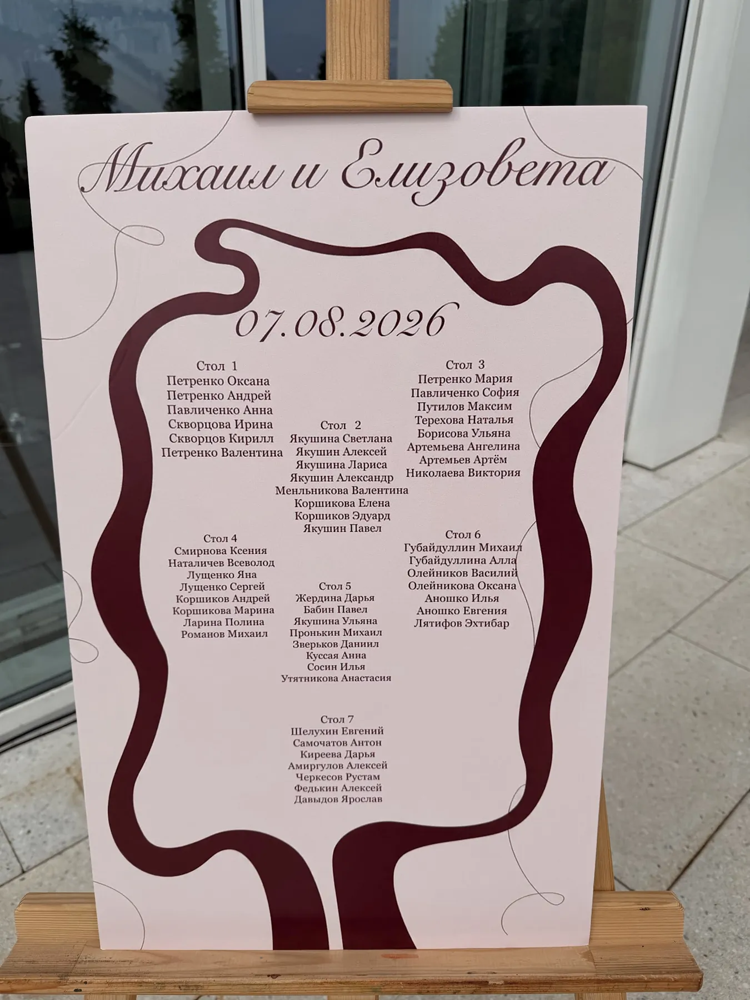
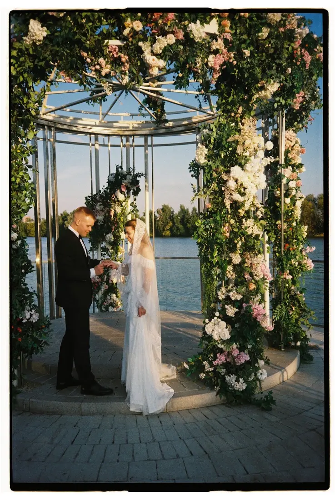

Розовая палитра легко превращается в «слишком сладкую». Чтобы она выглядела современно, нужны правильные оттенки и пара контрастных акцентов. Рассказываем, как работать с розовым и пудровым цветом, на примере нашей свадьбы в ротонде у воды.
Выбираем оттенок
- Пудровый. Приглушённый, чуть сероватый — самый современный вариант.
- Нежно-розовый. Светлый, воздушный; хорошо работает в больших количествах только вместе с белым и зеленью.
- Яркий розовый. Акцент для смелого праздника: отдельные цветы или детали.
Два-три оттенка одного цвета — от светлого до более насыщенного — дают глубину и не превращают зал в «розовую комнату».
С чем сочетать
С зеленью. Листва делает розовый живым: ротонда в нашем кейсе целиком увита зеленью, а розовые и белые цветы читаются на ней как акценты.
С белым и молочным. Драпировка цвета молока и белые цветы уравновешивают розовый и добавляют света.
С гранатовым и бордо. Глубокий акцент останавливает «сладость»: в нашей свадьбе гранатовая лента на плане рассадки поддерживает розовый и делает палитру взрослее. О глубоких цветах — в статье про свадьбу в бордовом цвете.

Где использовать розовый
- Церемония. Арка или ротонда с розовыми цветами. О формах арок — в статье про свадебную арку.
- Флористика. Пудровые и розовые цветы в композициях у президиума и на столах.
- Текстиль и драпировка. Нежные ткани на фоне.
- Полиграфия. План рассадки, карточки, меню в той же гамме.
Совет: розовый лучше всего выглядит при мягком дневном и вечернем свете. Проверьте цвет тканей и цветов при освещении вашей площадки.
Пример: «Ротонда у воды»
Церемония на берегу: металлический каркас ротонды полностью увит зеленью с розовыми и белыми цветами, фон — вода и небо. Подробнее — в кейсе «Ротонда у воды». О белом и зелёном сочетании — в статье про свадьбу в зелёном цвете.

Как заказать
Расскажите о площадке и дате — подберём оттенки розового под ваш свет и посчитаем смету.
Частые вопросы
Как сделать розовую свадьбу не слишком сладкой?
Добавьте зелень, белый и один глубокий акцент вроде гранатового или бордо, выберите приглушённые оттенки.
Какой розовый выбрать для свадьбы?
Пудровый и приглушённые оттенки выглядят современнее. Яркий розовый лучше использовать акцентом.
Подойдёт ли розовая палитра для осени?
Да, если добавить глубокие цвета — бордо, гранат — и тёплый свет.